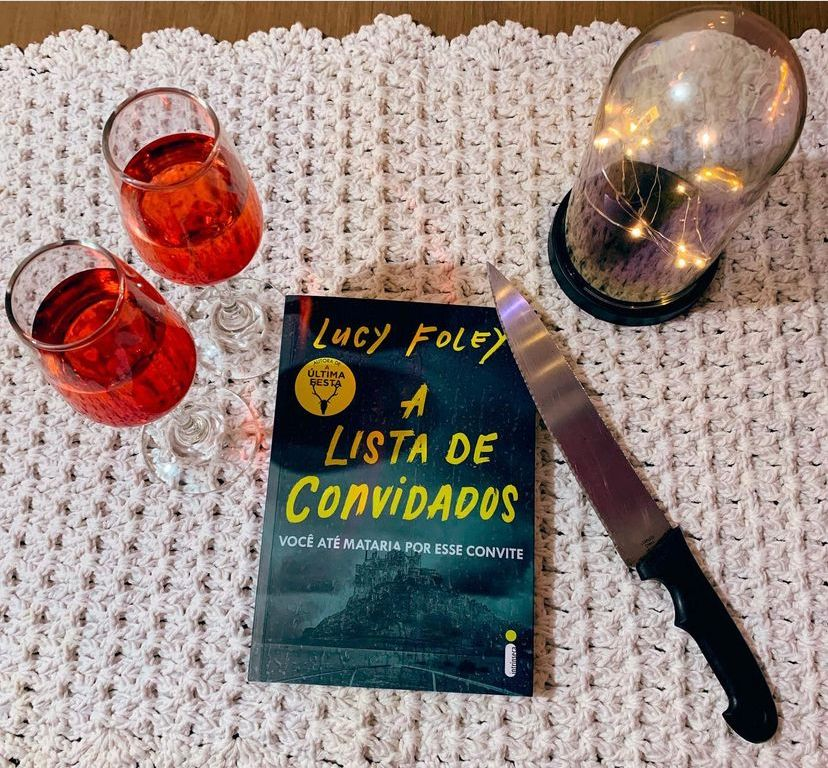

A lista de Convidados
(Lucy Foley - Intrínseca)
⭐⭐⭐⭐
Ouvi muita gente falando que o livro era igualzinho ao “A Última Festa” mas, não achei tanto assim; claro, a narrativa que vai e volta em primeira pessoa sempre sobre o ponto de vista de alguns personagens, uma festa em lugar remoto, amigos de longa data, conflitos e segredos não ditos se mantêm no livro mas, desta vez a autora conseguiu fazer uma história mais criativa, um suspense mais envolvente e criar uma trama mais surpreendente.
Em uma ilha afastada na costa da Irlanda, convidados se reúnem para celebrar uma união de dar inveja. O noivo, bonito e charmoso, é uma estrela de TV em ascensão. A noiva, elegante e ambiciosa, é editora da própria revista. A festa de casamento é um reflexo de suas personalidades: vestido e terno de grife, localização remota e exclusiva, decoração luxuosa, uísque da melhor qualidade. Tudo rigorosamente planejado.
Mas a perfeição só existe mesmo nos planos. E o perigo mora nos detalhes. À medida que as garrafas de champanhe estouram e a festa avança, o ressentimento e a inveja começam a se sobrepor à alegria e aos votos de felicidade. E então uma tempestade desaba com fúria sobre a ilha, e esse é só mais um motivo para abalar os ânimos já alterados.
Depois de uma abrupta queda de luz no meio da festa, a garçonete anuncia aos convidados que um corpo foi encontrado. Isolados e aguardando a chegada da polícia, apenas uma coisa é certa: o assassino é uma das pessoas presentes no evento.
Estava um pouquinho desanimada quando comecei a ler mas, a história me prendeu. Logo percebi que a Lucy Foley realmente utilizou do mesmo recurso do primeiro livro na narrativa do livro “A Última Festa “ e não foi um problema. A história foi bem construída e é um ótimo suspense, como no outro livro temos personagens fúteis e odiosos bem difíceis de se apegar, da pra gostar de um ou outro mas, isso não estraga a experiência e acho que faz parte da construção da trama.